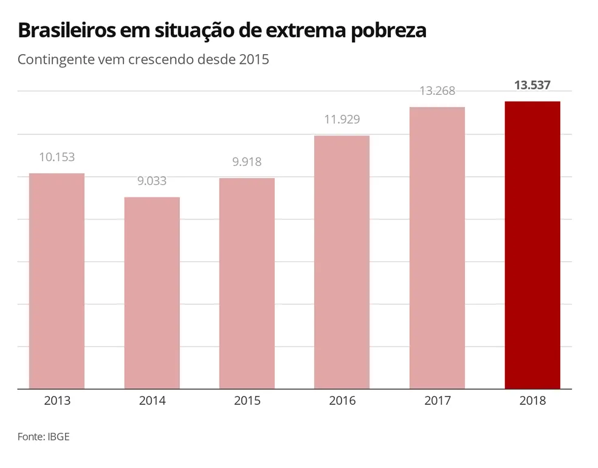

O ODS 1 trata da pobreza, cuja erradicação é entendida pelo Brasil como ponto central para toda a estratégia de desenvolvimento de sustentável. A meta 1.1, e também mais urgente, é a erradicação da pobreza extrema.
De acordo com o Programa das Nações Unidas para o Desenvolvimento (Pnud), fomos um dos países com melhor desempenho nesta meta, na última década: o Brasil reduziu a pobreza extrema a menos de um sétimo do nível de 1990, e a proporção de pessoas vivendo em pobreza extrema passou 25,5% para 3,5%, em 2012
O desafio maior, portanto, é tratar das outras metas, como a 1.2: reduzir à metade, até 2030, a proporção de indivíduos vivendo em situação de pobreza (e não apenas a pobreza extrema).
Para dar conta deste objetivo, o país precisará estabelecer novos marcos políticos para garantir que
sistemas de proteção social atinjam os indivíduos pobres e vulneráveis. Ainda mais com os
problemas
causados
pela pandemia da COVID-19.
A definição de pobreza está associada à análise do padrão de vida dos indivíduos e na forma como suas demandas são atendidas frente a determinado contexto socioeconômico. Vale ressaltar que as múltiplas abordagens da pobreza contemplam conceitos monetários, não monetários e sociais, incluindo direitos, representatividade e liberdade dos indivíduos.
Acabar com a pobreza em todas as suas formas, em todos os lugares. Até 2030, erradicar a pobreza extrema para todas as pessoas em todos os lugares.
O IBGE divulgou ontem indicadores revelando que 13,5 milhões de brasileiros, ou 6,5% da população, viviam no ano passado em condições classificadas pelos organismos internacionais como “pobreza extrema” (renda inferior a US$ 1,9 diário).
